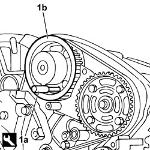
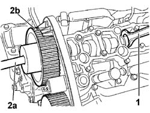
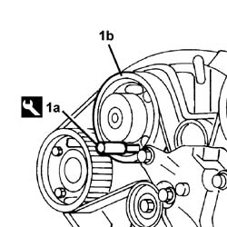
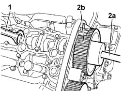

1036C39 TIMING VARIATOR ON CYLINDER HEAD INTAKE CAMSHAFT - R R
- Path
- Procedures > 10 ENGINE > 1036 TIMING SYSTEM > 1036C OVERHEAD CAMSHAFTS (2) IN CYLINDER HEAD (1) > 1036C39 TIMING VARIATOR ON CYLINDER HEAD INTAKE CAMSHAFT - R R
- Kind
- repair procedure (removal / refitting; the operation number is the code)
- Applies to
- engines: 3.0 24V V6; all production periods
- Interactive page
- https://sloeber94.github.io/elrnDB-fUlss/en/#/179006948
Applies to: engines: 3.0 24V V6; all production periods
 Removing
Removing
 Refitting
RefittingPosition the vehicle on a lift.
- Disconnect the negative battery terminal.
Description | Connector | |
|---|---|---|
- | Battery | A001 |
Op. 4450B04 RIGHT FRONT WHEEL R R
Op. 7055B54 UNDER-ENGINE GUARD - R R
Op. 7055B91 RIGHT FRONT WHEEL ARCH LINER - R.R.
Op. 5010B18 CLIMATE CONTROL UNIT AIR INTAKE - R.R.
Op. 5050B34 WINDSCREEN WIPER ARM/S COMPLETE WITH BLADE - R+R
Op. 7210E22 WINDSCREEN BASE TRIM
Op. 1088B10 ENGINE COOLING TANK - R + R
Op. 4130B10 POWER STEERING FLUID RESEVOIR R R
Op. 4130B12 POWER STEERING FLUID RESERVOIR MOUNTING/BRACKETS - POSITION
Op. 1008C10 POWER UNIT UPPER REACTION LINK R R
Op. 4450B04 RIGHT FRONT WHEEL R R
Op. 4410D16 BRACKET (ONE) RETAINING CHASSIS TO BODY - R R
Op. 1092G10 SINGLE ENGINE BELT R R
Op. 1092A10 CRANKSHAFT SERVICES PULLEY - R.R.
Op. 1092G15 ENGINE COMPONENT SINGLE BELT MOBILE TEMPERATURE - R RWITH BELT REMOVED
Op. 1092G21 ENGINE COMPONENT SINGLE BELT FIXED TENSIONER - R RWITH BELT REMOVED
Op. 1032D12 TIMING SYSTEM PROTECTIVE COVER(S) - R + R
Op. 1008A46 CAM SHAFT LEFT RIGID MOUNT - R R
Op. 1008B10 POWER UNIT FRONT MOUNT (TIMING SIDE) FLEXIBLE BLOCK - REPLACE
Op. 1092C14 POWER STEERING PUMP/SELF LEVELLING SUSPENSION PUMP PULLEY - R + R WITH BELT REMOVED
Op. 1032B14 TOOTHED TIMING BELT - R + R FOR TIMING ADJUSTMENT OR REPLACEMENT VERSIONS WITH AIR CONDITIONER
- Working on the front head:
- Tilt the power unit appropriately.
1. Remove the reference pin (1a) from the camshaft pulley (1b) on the front head.
Description | Code | Function | |
|---|---|---|---|
1a | Pins | 1.870.893.000 | Camshaft pulley mounting |

Applies to: engines: 3.0 24V V6; all production periods
Op. 1016A30 LEFT CAM COVER - R + R AND REPLACE GASKET
1. Lock the rotation of the camshaft using the special tool.w
Description | Code | Function | |
|---|---|---|---|
1a | Spanner | 1.871.003.900 | Locking the camshaft |
- Undo the access plug to the bolt fixing the camshaft drive pulley to the front head;
2. Using a Torx no. 14 type spanner (2a) undo the fixing bolt and remove the pulley - phase transformer assembly (2b) from the vehicle.

Applies to: engines: 3.0 24V V6; all production periods
Op. 1048A59 TUBAZIONE DA DEBIMETRO A MANICOTTO CORPO FARFALLATO - S.R.
Op. 1068A54 POTENTIOMETER ON ACCELERATOR CONTROL - R.R.
Op. 1072B50 SLEEVES CONNECTING AIR CAPACITY BOX TO INLET MANIFOLD IS - R+R
Op. 1016A34 RIGHT-HAND CAM COVER - R + R AND REPLACE GASKET
- Working on the rear head:
1. Remove the reference pin (1a) from the camshaft pulley (1b).
Description | Code | Function | |
|---|---|---|---|
1a | Pins | 1.870.893.000 | Camshaft pulley mounting. |

Applies to: engines: 3.0 24V V6; all production periods
- Undo the access plug to the bolt fixing the camshaft drive pulley to the rear head;
1. Lock the rotation of the camshaft using the special tool.
Description | Code | Function | |
|---|---|---|---|
1 | Spanner | 1.871.003.900 | Locking the camshaft |
2. Using a Torx no. 14 type spanner (2a) undo the fixing bolt and remove the pulley - phase transformer assembly (2b) from the vehicle.

Applies to: engines: 3.0 24V V6; all production periods
Applies to: engines: 3.0 24V V6; all production periods
Refitting
Removing- Working on the front head:
- Tilt the power unit appropriately.
- Fit a new oil seal.
- Keep the rotation of the camshaft locked using the special tool. Position the pulley - phase transformer assembly ensuring that the opening in the head for the reference pin is centered in the slot.
Description | Code | Function | |
|---|---|---|---|
- | Spanner | 1.871.003.900 | Locking the camshaft |
Position the pulley - phase transformer assembly ensuring that the opening in the head for the reference pin remains centered in the slot.
- Insert the camshaft pulley reference pin.
Description | Code | Function | |
|---|---|---|---|
- | Pins | 1.870.893.000 | - |
- Tighten the bolt fixing the phase transforer to the camshaft to torque.
- Tighten a new protective plug to torque.
Value daNm | Fastening | Component | Ø | |
|---|---|---|---|---|
- | 2.0+57° | bolt | Phase transformer on camshaft | - |
- Tighten a new protective plug to torque.
Value daNm | Fastening | Component | Ø | |
|---|---|---|---|---|
- | 1.1 | plug | Protective plug for phase transformer on camshaft | - |
- Remove the camshaft lock tool.
- Repeat the procedure on the pulley - phase transformer assembly for the camshaft on the rear head.
Op. 1016A34 RIGHT-HAND CAM COVER - R + R AND REPLACE GASKET
Op. 1072B50 SLEEVES CONNECTING AIR CAPACITY BOX TO INLET MANIFOLD IS - R+R
Op. 1068A54 POTENTIOMETER ON ACCELERATOR CONTROL - R.R.
Op. 1048A59 TUBAZIONE DA DEBIMETRO A MANICOTTO CORPO FARFALLATO - S.R.
Op. 1016A30 LEFT CAM COVER - R + R AND REPLACE GASKET
Op. 1032B14 TOOTHED TIMING BELT - R + R FOR TIMING ADJUSTMENT OR REPLACEMENT VERSIONS WITH AIR CONDITIONER
Op. 1092C14 POWER STEERING PUMP/SELF LEVELLING SUSPENSION PUMP PULLEY - R + R WITH BELT REMOVED
Op. 1008B10 POWER UNIT FRONT MOUNT (TIMING SIDE) FLEXIBLE BLOCK - REPLACE
Op. 1008A46 CAM SHAFT LEFT RIGID MOUNT - R R
Op. 1032D12 TIMING SYSTEM PROTECTIVE COVER(S) - R + R
Op. 1092G21 ENGINE COMPONENT SINGLE BELT FIXED TENSIONER - R RWITH BELT REMOVED
Op. 1092G15 ENGINE COMPONENT SINGLE BELT MOBILE TEMPERATURE - R RWITH BELT REMOVED
Op. 1092A10 CRANKSHAFT SERVICES PULLEY - R.R.
Op. 1092G10 SINGLE ENGINE BELT R R
Op. 4410D16 BRACKET (ONE) RETAINING CHASSIS TO BODY - R R
Op. 4450B04 RIGHT FRONT WHEEL R R
Op. 1008C10 POWER UNIT UPPER REACTION LINK R R
Op. 1016A42 LEFT HAND CYLINDER HEAD IGNITION COIL COVER - R+R
Op. 4130B12 POWER STEERING FLUID RESERVOIR MOUNTING/BRACKETS - POSITION
Op. 4130B10 POWER STEERING FLUID RESEVOIR R R
Op. 1088B10 ENGINE COOLING TANK - R + R
Op. 7210E22 WINDSCREEN BASE TRIM
Op. 5050B34 WINDSCREEN WIPER ARM/S COMPLETE WITH BLADE - R+R
Op. 5010B18 CLIMATE CONTROL UNIT AIR INTAKE - R.R.
Op. 7055B91 RIGHT FRONT WHEEL ARCH LINER - R.R.
Op. 7055B54 UNDER-ENGINE GUARD - R R
- Disconnect the negative battery terminal.
Description | Connector | |
|---|---|---|
- | Battery | A001 |
Op. 0010T70 POWER ASSISTED STEERING FLUID - REPLACE
Op. 0010T21 COOLANT CHECK DENSITY AND TOP UP IF NECESSARY
- Remove the vehicle from the lift.
Topics linked from this page (27)
- 0010T21 ENGINE COOLANT - CHECK DENSITY AND CHANGE, IF NECESSARY
- 0010T70 POWER ASSISTED STEERING FLUID - REPLACE
- 1008A46 POWER UNIT RIGID SUPPORT - TIMING SIDE - R.R.
- 1008B10 POWER UNIT FRONT SUPPORT FLEXIBLE MOUNTING (TIMING SIDE) - REPLACE
- 1008C10 POWER UNIT UPPER SUPPORT - R R
- 1016A30 LEFT CAM COVER - R + R AND REPLACE GASKET
- 1016A34 RIGHT-HAND CAM COVER - R + R AND REPLACE GASKET
- 1016A42 LEFT HAND CYLINDER HEAD IGNITION COIL COVER - R+R
- 1032D12 TIMING SYSTEM PROTECTIVE COVER(S) - R + R
- 1048A59 TUBAZIONE DA DEBIMETRO A MANICOTTO CORPO FARFALLATO - S.R.
- 1068A54 POTENTIOMETER ON ACCELERATOR CONTROL - R.R.
- 1072B50 SLEEVES CONNECTING AIR CAPACITY BOX TO INLET MANIFOLD IS - R+R
- 1088B10 ENGINE COOLING TANK - R + R
- 1092A10 CRANKSHAFT PULLEY - R + R
- 1092C14 POWER STEERING PUMP/SELF LEVELLING SUSPENSION PUMP PULLEY - R + R WITH BELT REMOVED
- 1092G10 SINGLE ENGINE BELT R R
- 1092G15 ENGINE COMPONENT SINGLE BELT MOBILE TEMPERATURE - R RWITH BELT REMOVED
- 1092G21 ENGINE COMPONENT SINGLE BELT FIXED TENSIONER - R RWITH BELT REMOVED
- 4130B10 POWER STEERING FLUID RESEVOIR R R
- 4130B12 POWER STEERING FLUID RESERVOIR MOUNTING/BRACKETS - POSITION
- 4410D16 BRACKET (ONE) RETAINING CHASSIS TO BODY - R R
- 4450B04 RIGHT FRONT WHEEL R R
- 5010B18 CLIMATE CONTROL UNIT AIR INTAKE - R.R.
- 5050B34 WINDSCREEN WIPER ARM/S COMPLETE WITH BLADE - R+R
- 7055B54 UNDER-ENGINE GUARD - R R
- 7055B91 RIGHT FRONT WHEEL ARCH LINER - R.R.
- 7210E22 WINDSCREEN BASE TRIM